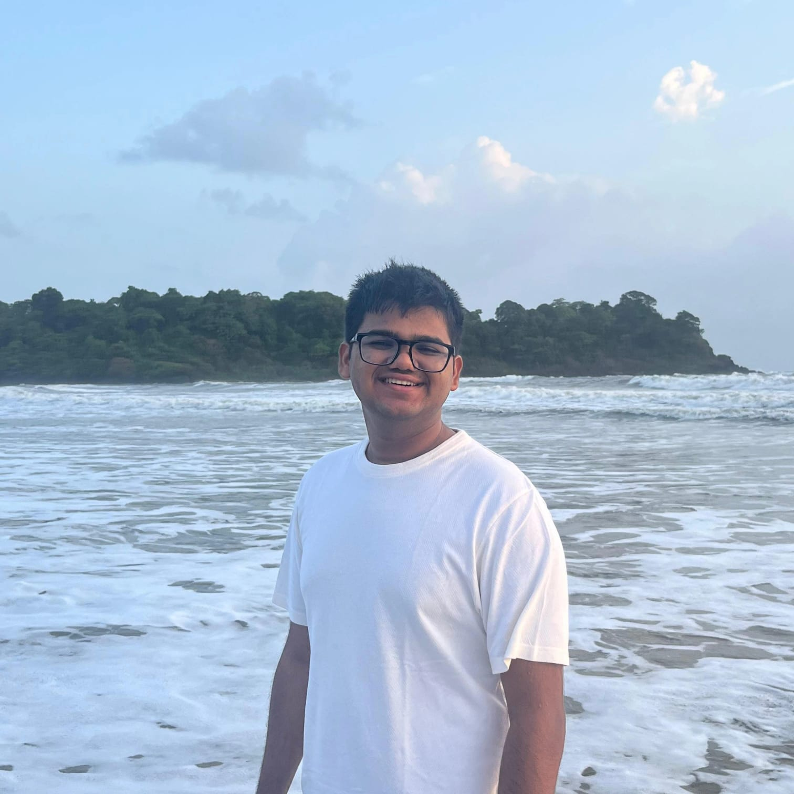

SHUBH GARG
BUILDS* COOL THINGS
Electrical Engineering undergrad at VJTI, Mumbai, working the gap between physical systems and software — teaching computers to re-locate microscopic wafer sites inside semiconductor tools, and fusing hand-written maintenance logs with sensor telemetry so machines don't fail quietly. I care about deterministic code, explainable models, and interfaces engineers can actually trust.
ABOUT ME
I'm a third-year B.Tech Electrical Engineering student who got a little too curious about what happens when electrons meet algorithms. My happy place is taking messy, physical-world problems — drifting wafer stages, degrading ship engines — and turning them into clean, deterministic software. Off the clock: quiet chess games and pickup basketball — strictly background characters in this story.
PROJECTS
A deterministic, zero-shot computer-vision engine that re-locates microscopic wafer sites with sub-pixel precision — even inside highly periodic semiconductor layouts where classical template matching fails.
- Multi-scale Normalized Cross-Correlation + periodicity-aware re-verification for DRAM/FinFET grids.
- ORB + RANSAC geometric fallback and 2D quadratic-surface sub-pixel refinement.
- No training data, no GPU — pure signal processing, fully reproducible (
seed(42)).
A production-grade multimodal pipeline that fuses unstructured technician logs with structured sensor telemetry to predict Remaining Useful Life (RUL) — and explains every single prediction.
- NLP semantic enricher with spatial context awareness ("port" vs "starboard") that maps log symptoms to the correct physical sensors.
- Random Forest regressor for RUL — R² = 0.996 on validation, beating naive linear heuristics.
- SHAP-based explainability: per-prediction diagnostic reports showing exactly which sensors drive health degradation.
EXPERIENCE
Led QA & validation for 85 AI simulator modules, ran user research with surgeons and clinics, and built investor pitch decks translating complex features into compelling value propositions in a high-growth startup.
SKILL TREE
LANGUAGES
VISION & DATA
WEB
EE TOOLKIT
DEVLOG
Why I Built Drift-Sense Without Deep Learning
Everyone reaches for PyTorch these days, but in semiconductor manufacturing, deterministic latency matters more than a 0.1% accuracy bump. Here's why classical CV (NCC + RANSAC) still rules the wafer fab...
Black-Box Models Don't Survive Safety-Critical Reviews
An R² of 0.996 means nothing if the chief engineer can't ask "why?" — how SHAP turned my naval RUL model from a number-generator into an auditable diagnostic system...
CONTACT
GOT A QUEST FOR ME?
Internships, collabs, research, or a good technical argument — my inbox is open. Send a transmission and I'll respond faster than a buck converter.